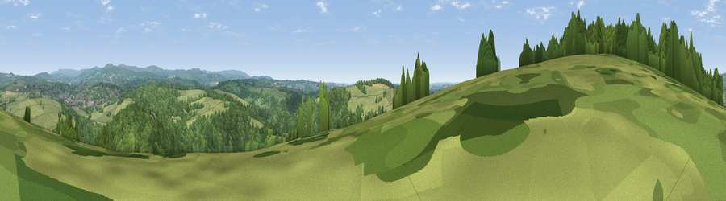

Viewpoint near Gunnislake
#22914 in England · top 47% of its area beats it · near Gunnislake · access?Where it is
The exact computed spot (SX 46275 71375). Click the marker for map links.
Public access: no public right of way or access land is recorded at this exact spot — it may be on private land. Computed from Natural England's CRoW access layer and OpenStreetMap rights of way — not the legal definitive map. Always verify locally.
The view, rendered

A 360° render of this exact spot computed from the terrain model, tree cover and land cover — summer colours, afternoon light, calibrated against photographs of famous viewpoints. Real trees, hedges and buildings will differ in detail.
The panorama
Grey silhouette: terrain skyline in each direction (720 bearings, Earth curvature and refraction included). Dashed green: skyline with trees (+15 m) and buildings (+8 m) as obstacles. Blue strip: how far the ground is visible on each bearing.
Where the view opens
Wedge length = distance to the farthest visible ground on that bearing (vegetation-aware). Rings at 10, 25 and 50 km.
What fills the view
66% woodland · 33% grassland ·
Angular shares of the visible panorama (visual magnitude), not map area. Landscape diversity 0.31 (0–1 Shannon).
Key numbers
More beautiful places nearby
The staircase of upgrades: each row has a higher view potential than everything closer. Driving times are estimates from straight-line distance, calibrated against real road routing — check an actual route before setting out.
| Place | Direction | Drive | Score |
|---|---|---|---|
| Quarry Cross | S · 4 km | ~10 min | 57.9 |
| Hingston Down | W · 5 km | ~12 min | 78.3 |
| Kit Hill | W · 9 km | ~17 min | 80.3 |
| Viewpoint near Dousland | E · 9 km | ~18 min | 81.0 |
| Viewpoint near Lee Moor | SE · 13 km | ~24 min | 82.7 |
| Viewpoint near Downderry | SW · 21 km | ~36 min | 83.5 |
| Viewpoint near Polperro | SW · 34 km | ~52 min | 83.7 |
| Pencarrow Head | SW · 37 km | ~56 min | 86.0 |
50.52192, -4.16995 · source: screening · position refined by local search. Computed location — check access rights before visiting.